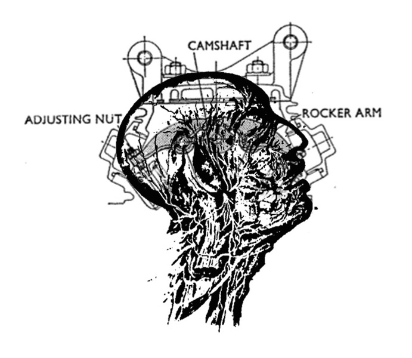

Interested by schematic fields, scoptic regimes, monumentality, and the initial point at which the body becomes abstract, my work continues to evolve technically and thematically. Influenced by semio-economic and aesthetic theory, the conceptual framework is driven by computer graphics, simulation and visualization techniques.
